<!DOCTYPE lake>
<p data-lake-id="u4a707479" id="u4a707479" style="text-align: center"><strong><span data-lake-id="ufbe13d28" id="ufbe13d28" style="color: #DF2A3F">电脑用户名是中文或者包含特殊符号，ESP-IDF环境无法安装成功</span></strong></p><p data-lake-id="u40624eea" id="u40624eea" style="text-align: center"><strong><span data-lake-id="u346e0399" id="u346e0399" style="color: #DF2A3F">电脑用户名是中文或者包含特殊符号，ESP-IDF环境无法安装成功</span></strong></p><p data-lake-id="u068732c4" id="u068732c4" style="text-align: center"><strong><span data-lake-id="ud387daff" id="ud387daff" style="color: #DF2A3F">电脑用户名是中文或者包含特殊符号，ESP-IDF环境无法安装成功</span></strong></p><p data-lake-id="u28efe55f" id="u28efe55f" style="text-align: center"><strong><span data-lake-id="u3ab90a97" id="u3ab90a97" style="color: #DF2A3F">参考此文档修改用户名为英文：</span></strong><a data-lake-id="ua03588db" href="https://blog.csdn.net/weixin_39112840/article/details/86351133" id="ua03588db" rel="noopener noreferrer" target="_blank"><strong><span data-lake-id="uc9c747a1" id="uc9c747a1">https://blog.csdn.net/weixin_39112840/article/details/86351133</span></strong></a></p><a class="yuque-card-link" href="https://player.bilibili.com/player.html?bvid=BV1UL3tzKEVi&amp;p=2&amp;page=2&amp;autoplay=0" rel="noopener noreferrer" target="_blank">thirdparty：thirdparty</a><p data-lake-id="u789b9aba" id="u789b9aba" style="text-align: center"><strong><span data-lake-id="ueb5a1a02" id="ueb5a1a02" style="color: #DF2A3F">​</span></strong><br/></p><p data-lake-id="u960d9776" id="u960d9776"><span data-lake-id="u763ed246" id="u763ed246">参考文档：</span></p><p data-lake-id="u17948409" id="u17948409"><span data-lake-id="u538115e8" id="u538115e8">ESP-IDF 编程指南：</span><a data-lake-id="u6c78c98b" href="https://docs.espressif.com/projects/esp-idf/zh_CN/stable/esp32s3/index.html" id="u6c78c98b" rel="noopener noreferrer" target="_blank"><span data-lake-id="ucb975085" id="ucb975085">https://docs.espressif.com/projects/esp-idf/zh_CN/stable/esp32s3/index.html</span></a></p><p data-lake-id="u24cc9869" id="u24cc9869"><span data-lake-id="u916ee595" id="u916ee595">ESP-IDF Windows Installer：</span><a data-lake-id="u90db7ced" href="https://dl.espressif.cn/dl/esp-idf/?idf=4.4" id="u90db7ced" rel="noopener noreferrer" target="_blank"><span data-lake-id="u09935ae2" id="u09935ae2">https://dl.espressif.cn/dl/esp-idf/?idf=4.4</span></a></p><p data-lake-id="ue349ee02" id="ue349ee02" style="text-align: center"></p><p data-lake-id="u387ddd4e" id="u387ddd4e" style="text-align: center"><span data-lake-id="u439dd4bb" id="u439dd4bb">​</span><br/></p><p data-lake-id="u869dccfe" id="u869dccfe"><span data-lake-id="u82adaa84" id="u82adaa84">官方安装说明： </span><a data-lake-id="u376a4d3a" href="https://docs.espressif.com/projects/esp-idf/zh_CN/stable/esp32s3/get-started/windows-setup.html" id="u376a4d3a" rel="noopener noreferrer" target="_blank"><span data-lake-id="u04a6858d" id="u04a6858d">https://docs.espressif.com/projects/esp-idf/zh_CN/stable/esp32s3/get-started/windows-setup.html</span></a></p><p data-lake-id="u85858d59" id="u85858d59"><span data-lake-id="udb5e9a9e" id="udb5e9a9e">​</span><br/></p><h1 data-lake-id="Ld7Ty" id="Ld7Ty"><span data-lake-id="ua05ca7e7" id="ua05ca7e7">安装流程</span></h1><h2 data-lake-id="lh6je" data-lake-index-type="2" id="lh6je"><span data-lake-id="udd36a76f" id="udd36a76f">离线软件安装</span></h2><p data-lake-id="u99859bce" id="u99859bce">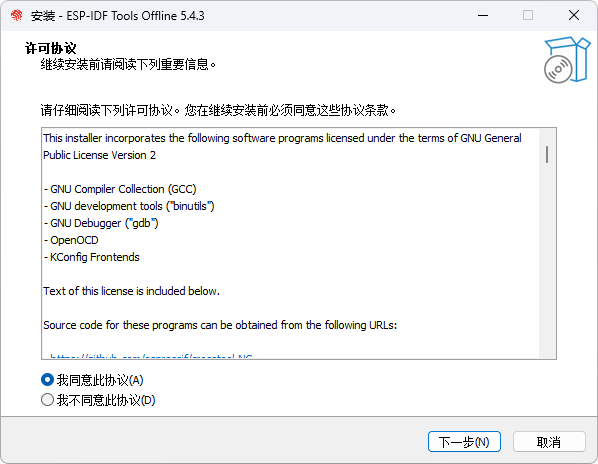</p><p data-lake-id="u69f51e06" id="u69f51e06">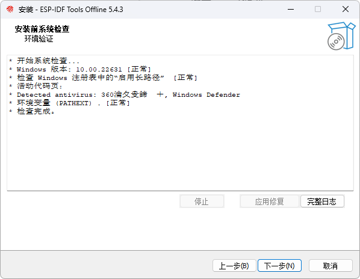</p><p data-lake-id="ue57a6763" id="ue57a6763">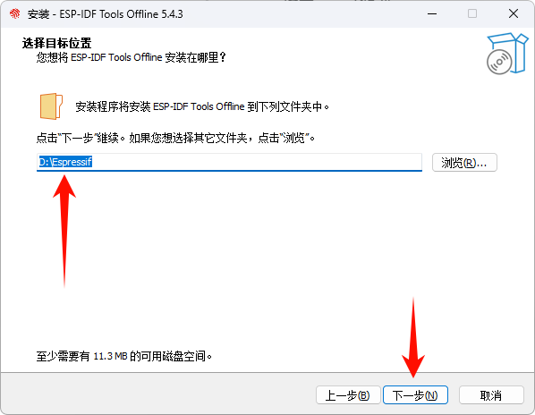</p><p data-lake-id="u7b85d945" id="u7b85d945">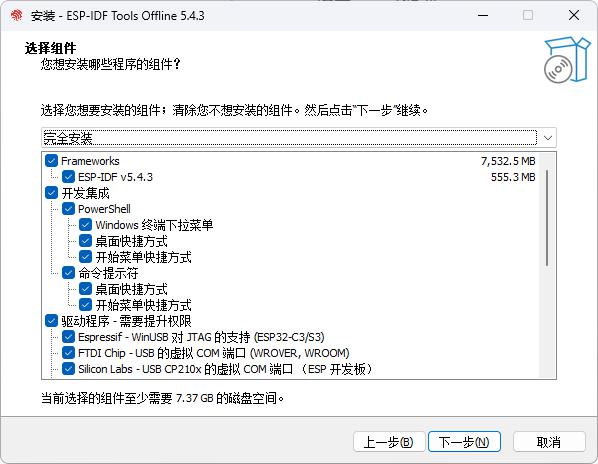</p><p data-lake-id="ub446e697" id="ub446e697"><span data-lake-id="u37fb5e55" id="u37fb5e55">确认路径如下，点击安装</span></p><p data-lake-id="ub7916563" id="ub7916563">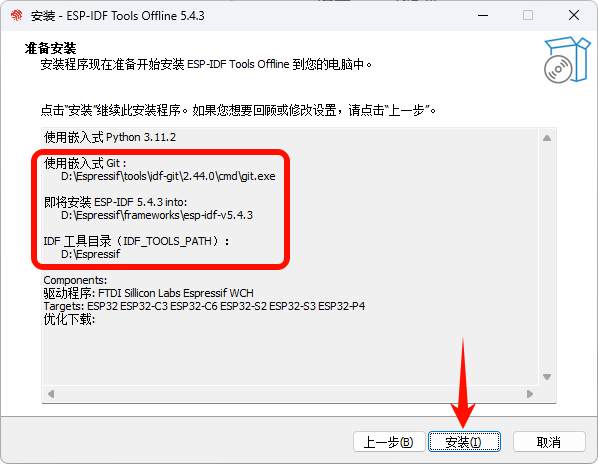</p><p data-lake-id="uee33c6be" id="uee33c6be">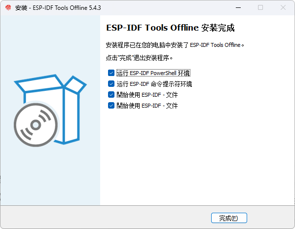</p><p data-lake-id="u56179eff" id="u56179eff"><span data-lake-id="ue5763956" id="ue5763956">一路下一步，没有下一步点击完成即可</span></p><p data-lake-id="u11060698" id="u11060698"><span data-lake-id="ua8abb84f" id="ua8abb84f">​</span><br/></p><p data-lake-id="u535304a8" id="u535304a8"><span data-lake-id="udf3361ce" id="udf3361ce">​</span><br/></p><p data-lake-id="u10f80c8b" id="u10f80c8b"><span data-lake-id="uaf88f84e" id="uaf88f84e">如果是linux下安装环境的话，可以执行一下命令</span></p><span class="yuque-card-unsupported">[codeblock]</span><p data-lake-id="uea8f8a7b" id="uea8f8a7b"><span data-lake-id="u6ad54e6b" id="u6ad54e6b">问题</span></p><span class="yuque-card-unsupported">[codeblock]</span><p data-lake-id="u84a0dbb7" id="u84a0dbb7"><span data-lake-id="u84f32bf4" id="u84f32bf4">如果遇到了上面这个问题，需要去到对应的库，单独将该文件下载下来，放到它原来的位置</span></p><p data-lake-id="ub957c5f5" id="ub957c5f5"><span data-lake-id="u9544432b" id="u9544432b">​</span><br/></p><p data-lake-id="ub10b3d1d" id="ub10b3d1d"><span data-lake-id="u2ef421d7" id="u2ef421d7">​</span><br/></p><h2 data-lake-id="XFOq5" data-lake-index-type="2" id="XFOq5"><span data-lake-id="u3308cd4a" id="u3308cd4a">VSCODE安装插件</span></h2><h3 data-lake-id="i9FTf" data-lake-index-type="2" id="i9FTf"><span data-lake-id="u20555e86" id="u20555e86">搜索esp-idf插件</span></h3><p data-lake-id="u062c09bf" id="u062c09bf">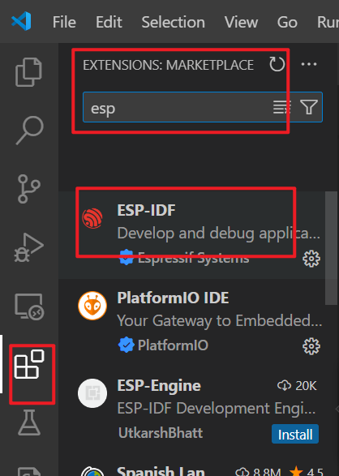</p><h3 data-lake-id="ORir1" data-lake-index-type="2" id="ORir1"><span data-lake-id="u52ef41c2" id="u52ef41c2">配置插件</span></h3><h4 data-lake-id="LkOPu" data-lake-index-type="2" id="LkOPu"><span data-lake-id="u5f78fc75" id="u5f78fc75">准备缓存目录</span></h4><p data-lake-id="ub21bfa71" id="ub21bfa71"><span data-lake-id="u7efbaba7" id="u7efbaba7">如果不提前准备缓存文件，后边的下载过程会耗时很久，建议提前放置准备好的文件，即可以跳过下载流程：</span></p><p data-lake-id="uc5c14a00" id="uc5c14a00"><span data-lake-id="u46b2a70a" id="u46b2a70a">即将</span><code data-lake-id="u5962828c" id="u5962828c"><span data-lake-id="uc2acada4" id="uc2acada4">dist.zip</span></code><span data-lake-id="ue8e33e31" id="ue8e33e31">内容，解压至</span><code data-lake-id="u587f1b2d" id="u587f1b2d"><span data-lake-id="udecfd207" id="udecfd207">D:\Espressif\dist</span></code><span data-lake-id="u3222478e" id="u3222478e">目录（路径取决于你安装时配置的路径）。</span></p><p data-lake-id="u0d9a2d2e" id="u0d9a2d2e"><span data-lake-id="ubb9f036f" id="ubb9f036f">解压后如下图：</span></p><p data-lake-id="u31099fb4" id="u31099fb4">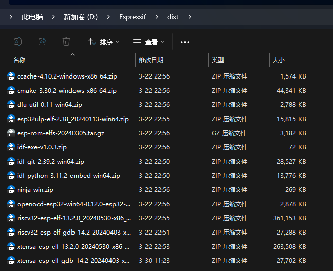</p><p data-lake-id="ub655ef40" id="ub655ef40"><br/></p><h4 data-lake-id="Xl8UR" data-lake-index-type="2" id="Xl8UR"><span data-lake-id="ubb7a71f3" id="ubb7a71f3">选择USING EXISTING SETUP</span></h4><p data-lake-id="uf925b189" id="uf925b189"><span data-lake-id="ud41b3083" id="ud41b3083">如果找不到此界面，可以按F1输入</span><code data-lake-id="ucae36069" id="ucae36069"><span data-lake-id="u2fb38f42" id="u2fb38f42">wel</span></code><span data-lake-id="u89131d6a" id="u89131d6a">或</span><code data-lake-id="u4da51dc7" id="u4da51dc7"><span data-lake-id="uda953a4b" id="uda953a4b">idfconfig</span></code><span data-lake-id="u5bb43511" id="u5bb43511">搜索入口</span></p><p data-lake-id="u7d25d885" id="u7d25d885">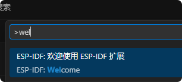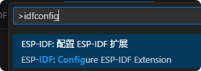</p><p data-lake-id="u6f9f8e34" id="u6f9f8e34"><span data-lake-id="ud4633405" id="ud4633405">通过插件可以进入扩展配置</span></p><p data-lake-id="uc2634a8d" id="uc2634a8d">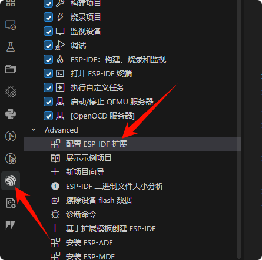</p><p data-lake-id="u08ea9be7" id="u08ea9be7"><span data-lake-id="u87aef227" id="u87aef227">选择之前已经安装过的esp-idf版本</span></p><p data-lake-id="ubf3e30fd" id="ubf3e30fd">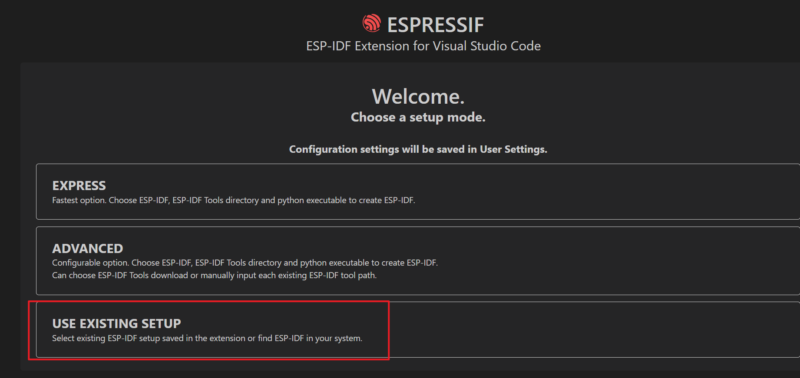</p><p data-lake-id="u05415dbb" id="u05415dbb"><span data-lake-id="u59441dc0" id="u59441dc0">填写如下两个目录，要确保本地存在这俩目录，根据自己刚刚</span><strong><span data-lake-id="ua1ee7cd3" id="ua1ee7cd3">安装的路径</span></strong><span data-lake-id="u0e5a6d8c" id="u0e5a6d8c">填写：</span></p><p data-lake-id="u689c8996" id="u689c8996"><span data-lake-id="u5df56708" id="u5df56708">我的目录位置：</span></p><ul list="u780eb83b"><li data-lake-id="u918db294" fid="u7f06bb63" id="u918db294"><span data-lake-id="u73f5d7c8" id="u73f5d7c8">IDF_PATH：</span><code data-lake-id="u4e7684d4" id="u4e7684d4"><span data-lake-id="ud0d4bd42" id="ud0d4bd42">D:\Espressif\frameworks\esp-idf-v5.4.3</span></code></li><li data-lake-id="u9ecf2cd2" fid="u7f06bb63" id="u9ecf2cd2"><span data-lake-id="u94ca7150" id="u94ca7150">IDF_TOOLS_PATH：</span><code data-lake-id="u2c1f60b7" id="u2c1f60b7"><span data-lake-id="u0b7c64be" id="u0b7c64be">D:\Espressif</span></code></li></ul><p data-lake-id="u8b108245" id="u8b108245">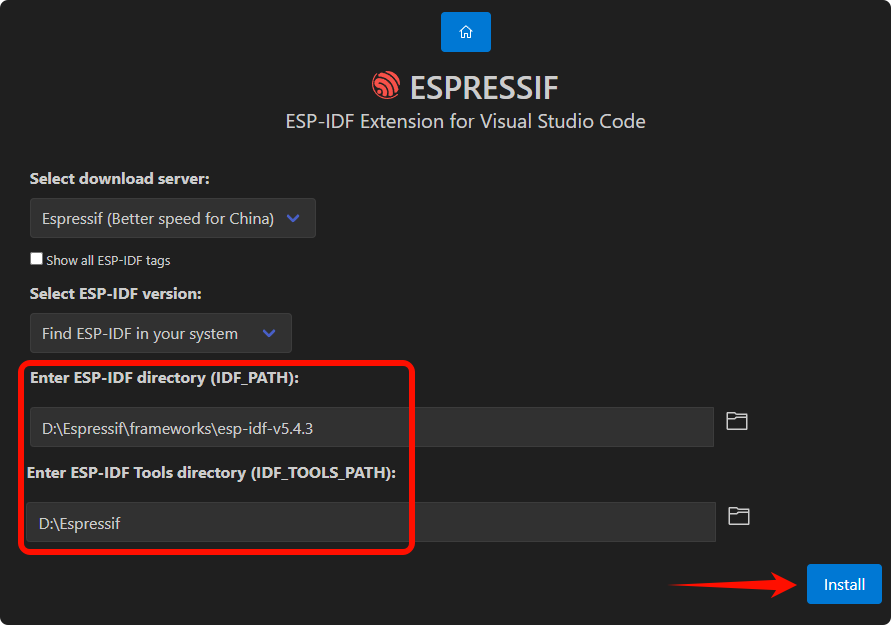</p><p data-lake-id="u83cf2fc6" id="u83cf2fc6"><span data-lake-id="u9aef0b7b" id="u9aef0b7b">如果你之前有将dist缓存解压到正确目录, 则会很快安装成功，否则会需要联网下载：</span></p><p data-lake-id="ufa62bfb7" id="ufa62bfb7">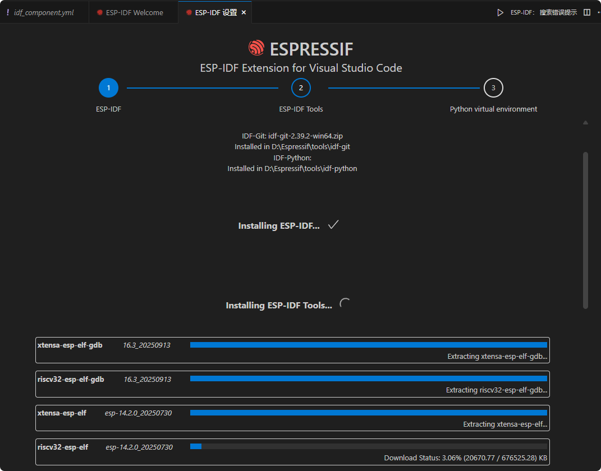</p><p data-lake-id="u210467f8" id="u210467f8"><br/></p><p data-lake-id="udfb702b6" id="udfb702b6"><span data-lake-id="ue81cdad6" id="ue81cdad6">如果之前安装成功，下面这里会显示出搜索出来的路径，选择即可完成安装</span></p><p data-lake-id="u46557169" id="u46557169">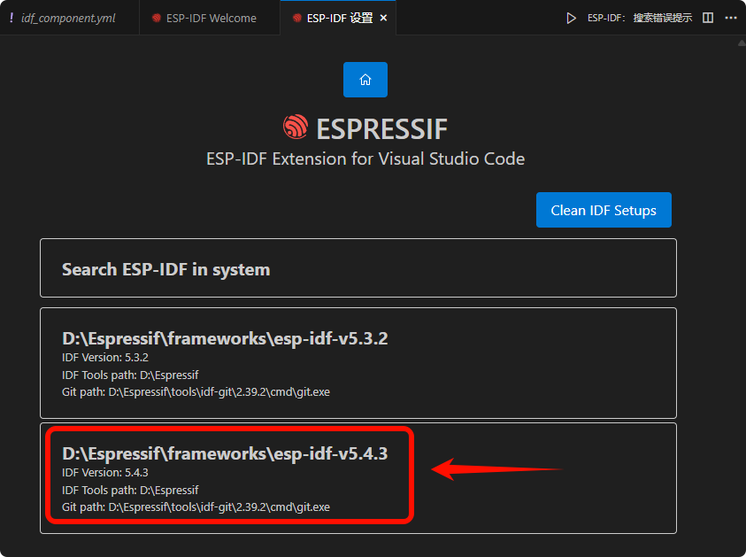</p><h4 data-lake-id="nSuF0" data-lake-index-type="2" id="nSuF0"><span data-lake-id="u46e5a8df" id="u46e5a8df">等待解压安装完毕</span></h4><p data-lake-id="u03a2bcc8" id="u03a2bcc8"><br/></p><p data-lake-id="u2d7cb732" id="u2d7cb732"><span data-lake-id="u033a71de" id="u033a71de">随后从新进入配置，效果如下：</span></p><p data-lake-id="u82cf6a2e" id="u82cf6a2e">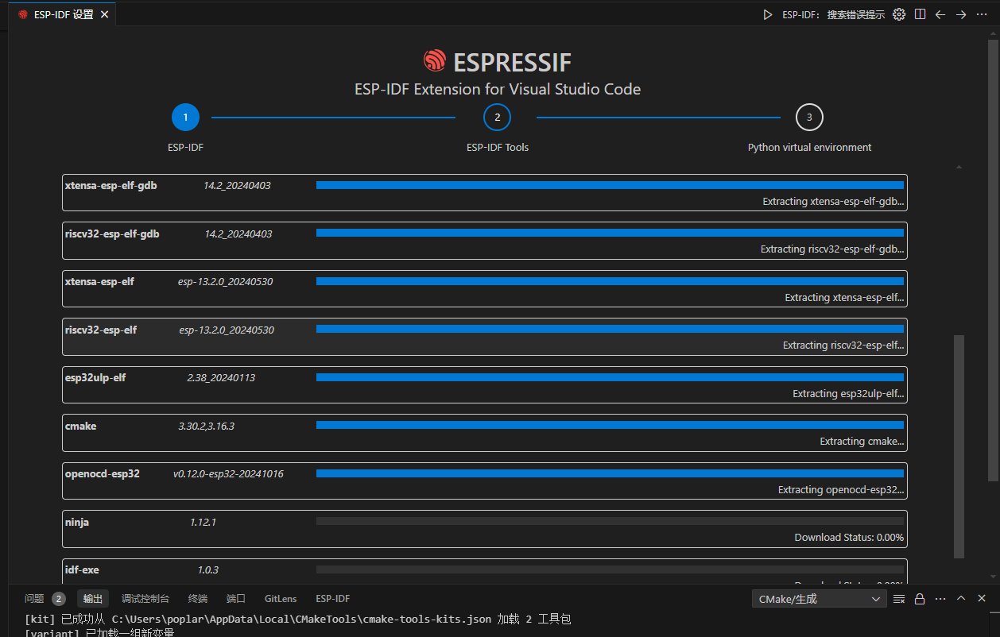</p><p data-lake-id="ue9fbb6e9" id="ue9fbb6e9"><br/></p><p data-lake-id="u4540c4a6" id="u4540c4a6"><br/></p><h1 data-lake-id="caz6j" id="caz6j"><span data-lake-id="u159dda7d" id="u159dda7d">问题处理</span></h1><h2 data-lake-id="QSd0S" data-lake-index-type="2" id="QSd0S"><span data-lake-id="ub0b3ebb1" id="ub0b3ebb1">头文件报红色</span></h2><p data-lake-id="ub787a1ab" id="ub787a1ab"><span data-lake-id="udd2b4c0d" id="udd2b4c0d">如果出现能正常编译，但是头文件报红色，可以尝试添加VSCODE配置文件夹</span></p><ol list="u54c810ac"><li data-lake-id="u4cbf70b7" fid="u76d8e636" id="u4cbf70b7"><span data-lake-id="uc6d810f4" id="uc6d810f4">单击设置按钮</span></li></ol><p data-lake-id="ub55f3a85" id="ub55f3a85">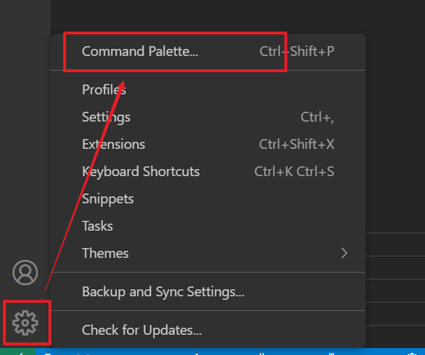</p><ol list="ua2a1d494" start="2"><li data-lake-id="u8bc0a94e" fid="u86a4a77f" id="u8bc0a94e"><span data-lake-id="u31af64ee" id="u31af64ee">输入ESP-IDF:Add VS 下图这个选项</span></li></ol><p data-lake-id="uf9083898" id="uf9083898">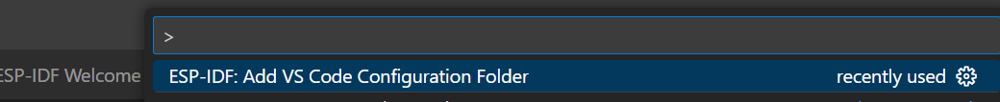</p><p data-lake-id="u2f56fbea" id="u2f56fbea"><br/></p><h2 data-lake-id="ddpaj" data-lake-index-type="2" id="ddpaj"><span data-lake-id="uc63ad395" id="uc63ad395">idf-python报错</span></h2><p data-lake-id="u2b0c90c7" id="u2b0c90c7">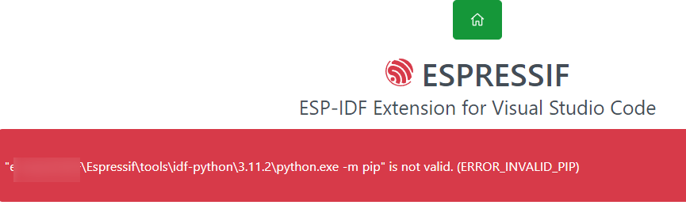</p><p data-lake-id="u35db0d6b" id="u35db0d6b"><span data-lake-id="u4842c7ca" id="u4842c7ca">如果出现这个错误，请到这个报错的目录下面执行如下命令</span></p><span class="yuque-card-unsupported">[codeblock]</span><p data-lake-id="u09936c64" id="u09936c64"><span data-lake-id="u13366014" id="u13366014">​</span><br/></p><h2 data-lake-id="C6gAj" data-lake-index-type="2" id="C6gAj"><span data-lake-id="u0b17af27" id="u0b17af27">如果编译特变慢</span></h2><p data-lake-id="u5b4acea2" id="u5b4acea2"><span data-lake-id="u9afcc86c" id="u9afcc86c">卸载电脑上的“电脑管家”</span></p><p data-lake-id="u2188e322" id="u2188e322">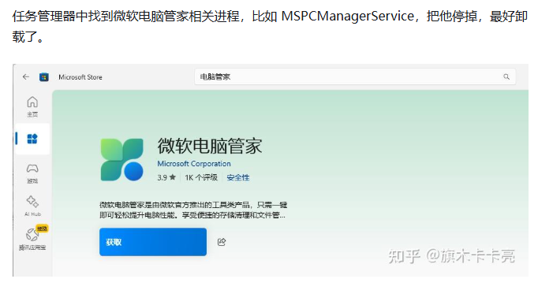</p>